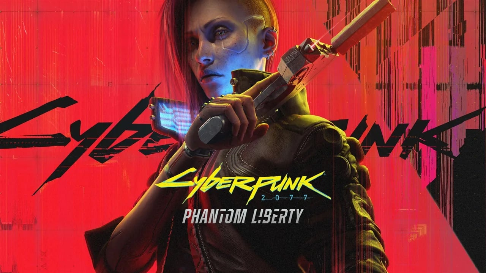

Cyberpunk 2077 est un jeux video d’action-RPG en monde ouvert et en jeux de tir en vue a la premiere personne (un FPS), développé par CD Projekt Red et inspiré du jeu de rôle Cyberpunk 2020 conçu par Mike Pondsmith. Le jeu présente un monde futuriste dystopique dans un monde avec un style cyberpunk, dans lequel la technologie coexiste avec une société humaine dégénérée. Le jeu est marqué par un développement particulièrement long, en partie parce que le studio développe en parallèle The Witcher 3. Le jeu a donc été repoussé plusieurs fois jusqu'au 10 décembre 2020. Massivement critiqué à sa sortie en raison d'importants problèmes techniques sur plusieurs de ses supports, Cyberpunk 2077 est progressivement réhabilité dans les années suivantes, alors que les développeurs ont proposé de nombreuses mises à jour pour améliorer l'expérience de jeu. Il est finalement vendu à plus de 20 millions de copies en septembre 2022 et permet de lancer une nouvelle franchise, avec une série d'animation sur Netflix, Cyberpunk: Edgerunners en 2022, et la mise en chantier d'une suite au jeu.
L'histoire de Cyberpunk 2077 prend place sur Terre en 2077 et se déroule dans la mégapole futuriste de Night City dans l’État libre de Californie. Dans ce monde futuriste à tendance cyberpunk et dystopique où règnent la pauvreté et les inégalités, l'influence des mégacorporation est prédominante — celles-ci ayant pris le pas sur les gouvernements et dictant leur loi, ainsi que celle du cyberespace, la “nouvelle frontiere” de cette époque s’apparentant a un monde virtuel fais uniquement a base de donnés.
Dans cet univers, certains usages de la technologie se sont démocratisés, notamment les ajouts d’implants cybernétiques permettant diverses augmentation du corps et des capacité humaines, ainsi que l'usage de drogues de synthèse variées et de danses sensorielles: des enregistrements informatiques qui permettent de revivre les souvenirs, expériences et sensations d'un autre individu. L'utilisation excessive de danses sensorielles entraîne une dépendance chez certains adeptes, qui peuvent perdre tout contrôle d'eux-mêmes et devenir agressifs. Appelés “Psychos”, ces individus qui ont aussi souvent recours à des implants d'améliorations technologiques qui s'attaquent aux parties organiques, faisant de ces êtres humain des “Cyber_ psychos” tueur de tout ce qui est vivant. En conséquence, la force de police spéciale MAX-TAC a été constituée afin de les neutraliser: MAX-TAC étant la plus forte puissance policière.
Le joueur incarne le personnage de V (Vincent ou Valérie), un cyber-mercenaire qui commence sa carrière à Night City au cours de l'une des trois courtes introductions possibles, selon ses origines (« Nomade », « Gosse des rues » ou « Corpo »), aboutissant à l’aventure principale au sein de Night City.
L'histoire principale traite des conflits de V avec la corporation Arasaka, une des plus puissantes corporations de cet univers, autour de la question de la Relique, une puce électronique permettant de stocker une copie de la personnalité humaine. À cette occasion, V sera confronté aux membres de la corporation et fera la connaissance de Johnny Silverhand, un ancien adversaire d'Araska qui aura une influence déterminante sur son futur.
Cyberpunk 2077 est un jeu d’action RPG (présenté comme action-aventure en monde ouvert par son éditeur) en vue premiere personne et en solo dans un monde ouvert. Il est prévu pour intégrer des fonctionnalités multijoueurs, mais, selon le directeur narratif chez CD Projekt Red, Philipp Weber, les projets de développement du mode multijoueur ont été mis de côté temporairement, les développeurs ayant privilégié l'optimisation du mode solo après la sortie du jeu.
Destiné à un public majeur, le jeu s’appuie sur un scenario non literaire avec une narration a plusieurs intrigues et comporte des éléments de gameplay empruntés à la version sur table du jeu de rôle Cyberpunk 2020. Le joueur peut personnaliser son personnage avec des équipements ancrés dans un univers cyberpunk.
En début de partie, le joueur crée son personnage en choisissant son sexe, son aspect physique (couleur de peau, coiffure, etc.), ses vêtements et ses implants cybernétiques (qui symbolisent ses compétences), ainsi que ses origines : « Nomade », « Gosse des rues » ou « Corpo ». Il répartit enfin des points de compétences dans cinq attributs du personnage (constitution, réflexes, capacité technique, intelligence et sang froid), en fonction du style de jeu souhaité.
Au cours du développement du jeu, le joueur pouvait choisir sa classe parmi les trois proposées : « NetRunner » (pirate informatique), « Techie » (spécialiste de la technologie) ou « Solo » (mercenaire, « combattant des rues »), tirées des classes de personnage de Cyberpunk 2020. Ce choix n’apparaît pas dans la version finale du jeu, mais demeure selon les orientations données par le joueur à son personnage.
Le personnage doit conclure diverses quêtes secondaires avant d'accéder à l'histoire principale. Dès qu'il entame l'histoire finale, il ne pourra plus faire marche arrière. Toutefois, lorsqu'il termine le jeu, une option de sauvegarde permet au joueur de revenir avant ce moment décisif pour explorer les quêtes annexes. Le scénario du jeu permet cinq fins possibles à l'histoire de V, selon les choix effectués par le joueur au cours de son aventure. Chaque décisions prise entre V et les différents personnages, chaque rencontres, chaque meurtres ou vie sauver, sont pris en compte et peuvent modifier les messages vidéo laissé lors des crédits de fin du jeux.
Cyberpunk 2077 est développé par le studio polonais CD Projekt. Avant d'aborder le développement de Cyberpunk 2077, le studio s'était fait connaître pour ses jeux The Witcher et The Witcher 2, tous deux accueillis favorablement par la presse et les joueurs.
En mai 2012, le studio annonce à la presse la réalisation d'un prochain projet, surnommé à ce moment “Cyberpunk” , en parallèle de son autre projet majeur, The Witcher 3. Le studio se sépare alors en deux : une première équipe s'attaque au développement de Cyberpunk, la seconde à celui du troisième The Witcher.
En octobre 2012, le studio officialise le titre du jeu : Cyberpunk 2077.
En janvier 2013, le studio dévoile le premier teaser du jeu. De cette manière, il délaisse quelque temps le développement du jeu au profit de celui de The Witcher 3, lequel est plus avancé. La sortie du jeu est alors repoussée, mais est attendue par la presse pour 2015, voire 2016.
En juin 2013, après l'Electronic Entertainment Expo 2013 (E3), les développeurs fondent un nouveau studio à Cravoie dans le but de compléter leurs effectifs, aussi bien pour The Witcher 3 que pour Cyberpunk 2077. Toutefois, en mars 2014, une partie de l'équipe de développement de Cyberpunk 2077 vient prêter main-forte à la seconde, alors que la sortie de The Witcher 3 est imminente.
En juin 2018, le jeu est présenté à l'E3 2018. Lors de l’événement, il est annoncé que le jeu se jouera intégralement en vue première personne afin de renforcer l’immersion du joueur. En août, à l'occasion de la Gamescom, le studio annonce que Cyberpunk 2077 est jouable dans son intégralité, bien que de nombreux éléments soient encore à réaliser, modifier ou parachever. Une vidéo montrant 48 minutes du jeu est ensuite diffusée par les développeurs sur le site Twitch.
En juin 2019, à l'occasion de la conférence Microsoft lors de l'E3 2019, une bande-annonce du jeu est présentée, dont la fin révèle la présence de l'acteur Keanu Reeves en tant que personnage du jeu. L'acteur est aussi présent en chair et en os lors de la conférence. La date de sortie du jeu est alors annoncée pour le 16 avril 2020 sur PC, Xbox One et PS4 et Stadia. Une nouvelle vidéo d'une heure, projetée aux journalistes présents à l'E3, est mise en ligne en août 2019; celle-ci montre V à Pacifica, une station balnéaire laissée à l’abandon par des entrepreneurs et maintenant infestée de gangs. Dans la vidéo, V combat un gang sous stéroïde, les Animals, afin de retrouver une camionnette pour le compte des Voodoo Boys.
Fin janvier 2020, CD Projekt RED s'adjoint l'aide du polonais QLOC (pl), studio spécialisé dans l’assurance qualitée et la localisation, pour terminer le développement du jeu. Le même mois, CD Projekt RED annonce, via son compte Twitter (devenu “X” ), que la sortie du jeu est repoussée au 17 septembre 2020, expliquant que celui-ci est dès à présent intégralement jouable mais que le studio a besoin de plus de temps pour le tester, y apporter des correctifs et le peaufiner, ayant pour objectif de le rendre parfait. La date reste inchangée malgré les difficultés liées au coronavirus, puis est à nouveau repoussée, au 19 novembre, pour les mêmes raisons. Le 27 octobre, le titre est une nouvelle fois repoussé, au 10 décembre 2020, pour sortir l'ensemble des versions le même jour. Les versions pour consoles Xbox series et PS5, initialement prévues pour 2021, sont sorties le 15 février 2022.
Cyberpunk 2077 Phantom Liberty est une nouvelle aventure, sous forme de DLC, qui vient ajouter une touche de suspense et d'espionnage à Cyberpunk 2077. Incarnez de nouveau V, mercenaire cyberpunk, et embarquez pour une périlleuse mission d'espionnage et d'intrigues politiques afin de sauver la présidente des NUSA. En tant que mercenaire cyber-amélioré V, rejoignez l'agent secret Solomon Reed pour démêler un réseau de loyautés brisées et de sinistres machinations politiques. Dans le dangereux quartier de Dogtown (nouvelle partie de ville qui viens s’ajouter a la MAP principale), vous devrez forger des alliances au cœur d'un tourbillon de rêves brisés et de jeux de pouvoir politiques. Une nouvelle fin du jeux est aussi disponible lors de la fin de ce DLC ajoutant encore plus de narrativité (à vous de la découvrir). Avec la sortie de ce DLC, la mise a jour viens retravailler tout le jeux: modification de l’ATH, du système de compétences, de nouvelles animations, nouvelles compétences et possibilité, une meilleure IA, de nouvelles quêtes, et nouvelles armes et véhicules. Cette mise a jour elle est gratuite pour tout joueurs possédant Cyberpunk 2077 et viens ajouter une touche de réalisme au jeux, les développeurs on d'ailleurs conseiller aux joueurs de reprendre une partie de zéro pour profiter pleinement de cette mise a jour.